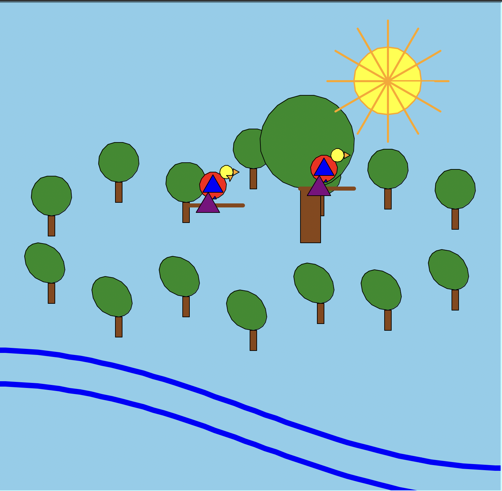

This project is about creating a graphical scene using Python’s Turtle graphics module. I used the provided building block functions (draw_rectangle, draw_triangle, draw_circle, draw_curve, pen_down functions, etc.) to create functions that draw composite shapes for my jungle scene. I went back and refactored the code to use loops for a more organized and efficient way to add shapes to elaborate my scene.
This function creates trees using multiple circles and rectangles. The parameters allow for flexible positioning and scaling:
• t: The turtle graphics object for drawing
• x, y: Starting position coordinates for the trees
• foliage_radius: Scale factor to make green part of trees larger or smaller
• jump_to: Moves tree trunks to position below trees
def draw_tree(t, x, y, foliage_radius=30):
"""Draw a tree at a specific position. If y is negative, draw foliage as an oval."""
jump_to(t, x, y)
if y >= 0:
draw_circle(t, foliage_radius, fill_color="forestgreen")
else:
# Draw an oval by stretching two semi‑circles
t.fillcolor("forestgreen")
t.begin_fill()
for _ in range(2):
t.circle(20, 90)
t.circle(40, 90)
t.end_fill()
# Draw trunk slightly lower than foliage center
jump_to(t, x - 5, y - 0)
draw_rectangle(t, 10, 30, fill_color="saddlebrown")
Here's the completed turtle graphics scene featuring many green trees with brown trunks, parrots on the branches, a sun with sun rays, and a body of water:

The scene combines multiple composite shapes created from basic turtle graphics functions. The trees use circles, ovals, and rectangles and have specific positions as demonstrated above. It also uses the loop and vectorization technique shown above. The parrots are made from overlapping circles and triangles in vibrant colors. The sun demonsrates the looping technique to create a sun with rays. Lastly, the water is represented by blue lines that go along the x axis on the page.